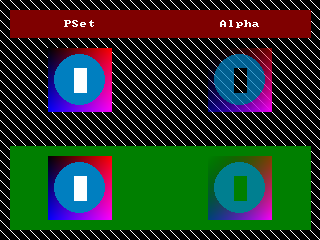

RGBA

Computes a valid color value including alpha (transparency) for hi/truecolor modes
for fbc version < 1.08:
for fbc version >= 1.08:
result = RGBA(red, green, blue, alpha)
red
the combined color
red, green, blue and alpha are components ranging 0-255.
The RGBA function can be used to compute a valid color value including an alpha channel for use while in hi/truecolor modes. It returns an unsigned integer for fbc version < 1.08, or an unsigned long for fbc version >= 1.08, in the format &hAARRGGBB, where RR, GG, BB, AA equal the values passed to this function, in hexadecimal format.
It is possible to retrieve the red, green, blue and alpha values from a color value, by using a combination of And and Shr. The second example below shows how to #define and use macros to do this.
Syntax
for fbc version < 1.08:
for fbc version >= 1.08:
#define RGBA(r,g,b,a) CULng((CUByte(r) Shl 16) Or (CUByte(g) Shl 8) Or CUByte(b) Or (CUByte(a) Shl 24))
Usage
result = RGBA(red, green, blue, alpha)
Parameters
red
red color component value
greengreen color component value
blueblue color component value
alphaalpha component value
Return Value
the combined color
Description
red, green, blue and alpha are components ranging 0-255.
The RGBA function can be used to compute a valid color value including an alpha channel for use while in hi/truecolor modes. It returns an unsigned integer for fbc version < 1.08, or an unsigned long for fbc version >= 1.08, in the format &hAARRGGBB, where RR, GG, BB, AA equal the values passed to this function, in hexadecimal format.
It is possible to retrieve the red, green, blue and alpha values from a color value, by using a combination of And and Shr. The second example below shows how to #define and use macros to do this.
Example
'open a graphics screen (320 * 240, 32-bit)
ScreenRes 320, 240, 32
Dim As Any Ptr img
Dim As Integer x, y
'make an image that varies in transparency and color
img = ImageCreate(64, 64)
For x = 0 To 63
For y = 0 To 63
PSet img, (x, y), RGBA(x * 4, 0, y * 4, (x + y) * 2)
Next y
Next x
Circle img, (31, 31), 25, RGBA(0, 127, 192, 192), ,,, F 'semi-transparent blue circle
Line img, (26, 20)-(38, 44), RGBA(255, 255, 255, 0), BF 'transparent white rectangle
'draw a background (diagonal white lines)
For x = -240 To 319 Step 10
Line (x, 0)-Step(240, 240), RGB(255, 255, 255)
Next
Line (10, 10)-(310, 37), RGB(127, 0, 0), BF 'red box for text
Line (10, 146)-(310, 229), RGB(0, 127, 0), BF 'green box for Putting onto
'draw the image and some text with PSET
Draw String(64, 20), "PSet"
Put(48, 48), img, PSet
Put(48, 156), img, PSet
'draw the image and some text with ALPHA
Draw String (220, 20), "Alpha"
Put(208, 48), img, Alpha
Put(208, 156), img, Alpha
'Free the image memory
ImageDestroy img
'Keep the window open until the user presses a key
Sleep
ScreenRes 320, 240, 32
Dim As Any Ptr img
Dim As Integer x, y
'make an image that varies in transparency and color
img = ImageCreate(64, 64)
For x = 0 To 63
For y = 0 To 63
PSet img, (x, y), RGBA(x * 4, 0, y * 4, (x + y) * 2)
Next y
Next x
Circle img, (31, 31), 25, RGBA(0, 127, 192, 192), ,,, F 'semi-transparent blue circle
Line img, (26, 20)-(38, 44), RGBA(255, 255, 255, 0), BF 'transparent white rectangle
'draw a background (diagonal white lines)
For x = -240 To 319 Step 10
Line (x, 0)-Step(240, 240), RGB(255, 255, 255)
Next
Line (10, 10)-(310, 37), RGB(127, 0, 0), BF 'red box for text
Line (10, 146)-(310, 229), RGB(0, 127, 0), BF 'green box for Putting onto
'draw the image and some text with PSET
Draw String(64, 20), "PSet"
Put(48, 48), img, PSet
Put(48, 156), img, PSet
'draw the image and some text with ALPHA
Draw String (220, 20), "Alpha"
Put(208, 48), img, Alpha
Put(208, 156), img, Alpha
'Free the image memory
ImageDestroy img
'Keep the window open until the user presses a key
Sleep

'' setting and retrieving Red, Green, Blue and Alpha values
#define RGBA_R( c ) ( CULng( c ) Shr 16 And 255 )
#define RGBA_G( c ) ( CULng( c ) Shr 8 And 255 )
#define RGBA_B( c ) ( CULng( c ) And 255 )
#define RGBA_A( c ) ( CULng( c ) Shr 24 )
Dim As UByte r, g, b, a
Dim As ULong col = RGBA(255, 192, 64, 128)
Print Using "Color: _&H\ \"; Hex(col, 8)
r = RGBA_R( col )
g = RGBA_G( col )
b = RGBA_B( col )
a = RGBA_A( col )
Print
Print Using "Red: _&H\\ = ###"; Hex(r, 2); r
Print Using "Green: _&H\\ = ###"; Hex(g, 2); g
Print Using "Blue: _&H\\ = ###"; Hex(b, 2); b
Print Using "Alpha: _&H\\ = ###"; Hex(a, 2); a
#define RGBA_R( c ) ( CULng( c ) Shr 16 And 255 )
#define RGBA_G( c ) ( CULng( c ) Shr 8 And 255 )
#define RGBA_B( c ) ( CULng( c ) And 255 )
#define RGBA_A( c ) ( CULng( c ) Shr 24 )
Dim As UByte r, g, b, a
Dim As ULong col = RGBA(255, 192, 64, 128)
Print Using "Color: _&H\ \"; Hex(col, 8)
r = RGBA_R( col )
g = RGBA_G( col )
b = RGBA_B( col )
a = RGBA_A( col )
Print Using "Red: _&H\\ = ###"; Hex(r, 2); r
Print Using "Green: _&H\\ = ###"; Hex(g, 2); g
Print Using "Blue: _&H\\ = ###"; Hex(b, 2); b
Print Using "Alpha: _&H\\ = ###"; Hex(a, 2); a
Dialect Differences
- Not available in the -lang qb dialect unless referenced with the alias __Rgba.
Differences from QB
- New to FreeBASIC
See also